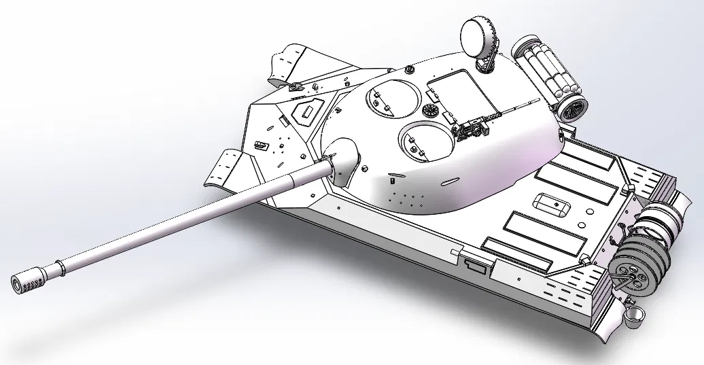
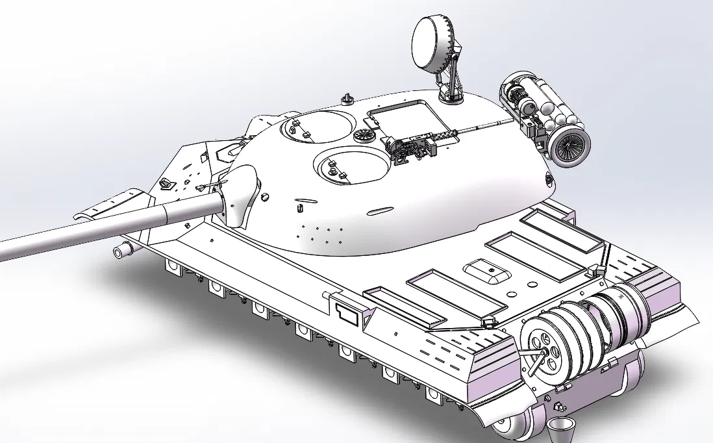
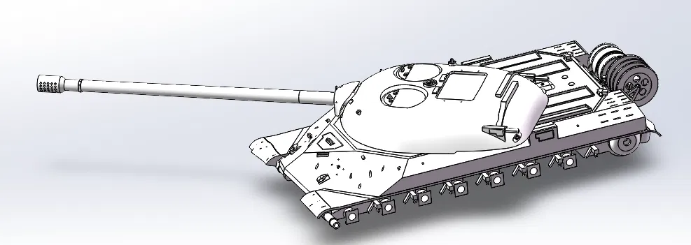
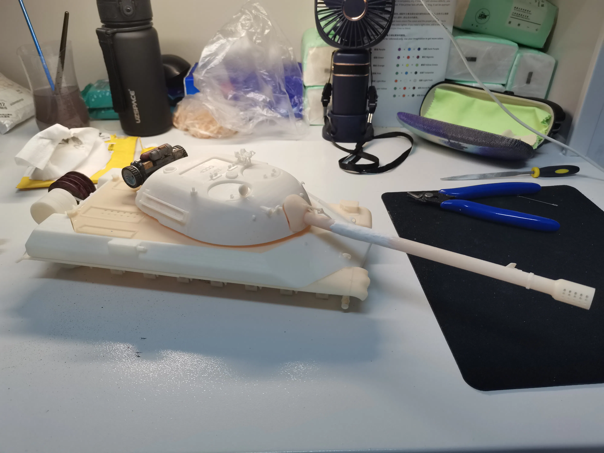
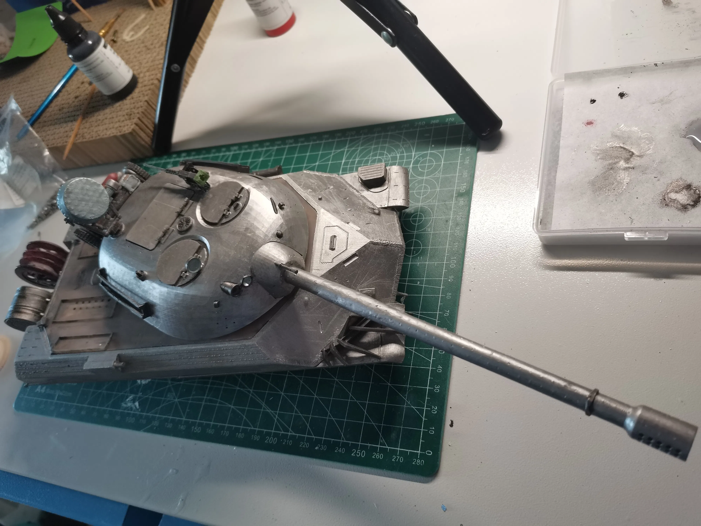
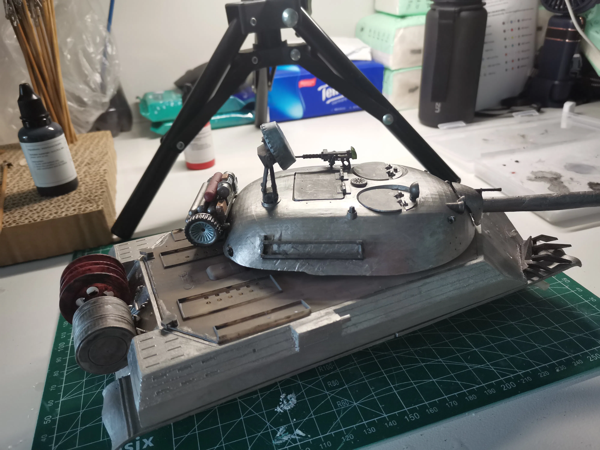

# 坦克世界皮肤图片
IS-7 皮肤台词：" 原来是这样的： 如果有人回到基地，至少一辆坦克，那就算是一次营救任务。如果无人返回，那就是一次侦察任务。那就是他们在总部报告中对我们的分类方式，而我就是参加了一次营救任务。事情是这样的：我们整个小队一起移动，一些奇怪的大雾导致能见度为 0，坦克只能摸索着前行，就好像在牛奶中前进一样。然后坦克出现了。D 系的坦克。我记得它们的外形，也知道如何应对它们。你也知道，我以前经历过一些战事。接下来又遇到了没有沙子的沙尘暴… 我也不知道该怎么解释。我经历了持续的耳鸣，一些嗡嗡的声音。眼睛仿佛沾满了焦油。奇怪的低语。黑暗… 如同活物一般。我们摔得东倒西歪，被分散了。我害怕吗？当然不怕。起初我们都很困惑，但后来就适应了。没有什么区别，我们来都来了，还有什么好怕的？什么都改变不了。服从命令，祈祷可以回家。所以我就回来了… 一个人回来了。上尉，你的问题很奇怪。当小队重新集结时，我会回去吗？你已经知道答案，我们发过同样的誓言。而这只会发生一次。发了誓，就要遵守它。现在不是犹豫不决的时候了。我不希望加入一次... 侦察任务。当我们抵达那里的时候... 我们会挺过去的。
# 一些制作过程






# 最后
该 IS-7 流纹岩皮肤模型还履带转动、炮塔旋转、炮管上下、夜视灯开关和发动机声音模拟功能。
感兴趣的小伙伴可以到 bilibili 观看制作过程的视频呀！
视频链接：